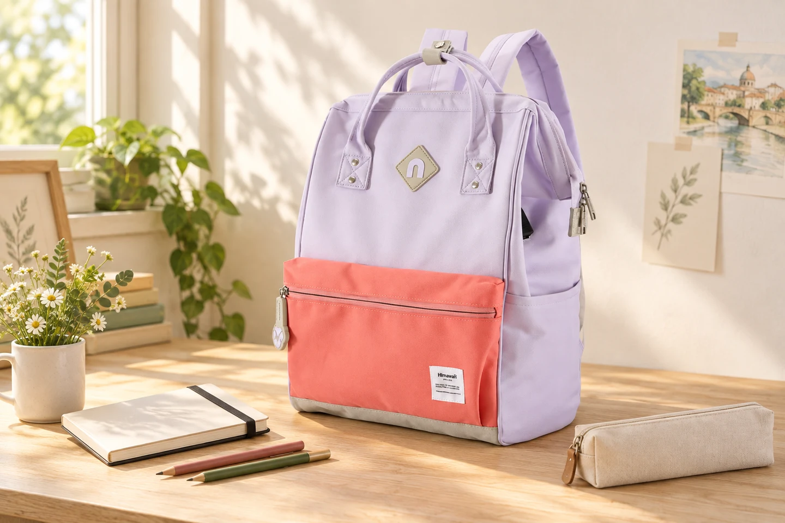

백팩의 은색 부품, 옷의 작은 장식과 맞춰보기

파스텔 백팩을 옷에 대보면 넓은 몸판색이 먼저 눈에 들어옵니다. 조금 더 살펴보면 지퍼 끝의 밝은 부분과 손잡이 가까이의 작은 둥근 점도 보입니다. 가방을 평소 차림에 더할 때 이런 세부는 시계나 안경, 귀걸이와 함께 비교할 수 있습니다. 모두 같은 색으로 맞출 필요는 없습니다. 가방에 이미 있는 작은 밝은 부분을 어느 정도 드러내고 싶은지부터 생각해봅니다.
실제로 쓰는 액세서리가 있다면 가방 사진 옆에 하나씩 놓아봅니다. 여러 장식을 한꺼번에 모으면 무엇이 조합을 바꾸는지 보기 어렵습니다. 평소 자주 쓰는 시계 하나나 안경 한 개로 시작하면 됩니다. 가방을 고르기 위해 새 액세서리를 마련하는 순서보다, 지금 반복해서 쓰는 물건과 작은 부품의 인상을 비교하는 쪽이 선택할 조건을 알기 쉽습니다.
Himawari No.9004 라벤더 코랄 원본 사진에는 옆쪽의 길쭉한 지퍼 손잡이와 앞주머니 끝의 밝은 손잡이가 보입니다. 위쪽 손잡이가 본체와 만나는 자리에는 은색으로 보이는 둥근 점들이 있습니다. 라벤더색의 넓은 면 위에 작은 밝은 요소가 나뉘어 있고, 코랄색 앞면에는 한쪽 끝의 손잡이가 남습니다. 여기서 고를 것은 보이는 색과 모양입니다. 은색이라는 표현은 사진 속 외관을 가리킵니다.

시계와 함께 두면 작은 밝은 부분의 양이 보인다
평소 밝은 시곗줄이나 밝은 테두리가 있는 시계를 쓴다면 백팩의 작은 부품과 나란히 봅니다. 시계가 넓은 면으로 보이는지, 얇은 테두리 한 줄만 보이는지에 따라 반복되는 양은 다릅니다. 가방의 부품도 둥근 점과 긴 손잡이로 나뉩니다. 비슷한 색이 있다는 사실에 더해 어느 쪽이 더 크게 드러나는지 비교하면 원하는 조합을 구체적으로 말할 수 있습니다.
시계의 밝은 면을 좋아하는 사람이라면 가방의 작은 점들이 그 인상을 이어주는지 볼 수 있습니다. 반대로 시계만 눈에 띄었으면 한다면 백팩 부품이 함께 보일 때 복잡하게 느껴지는지 살펴봅니다. 어느 쪽을 택해도 가방 본체를 시계색과 같게 바꿀 필요는 없습니다. 작은 부분끼리 비슷한 느낌이 남는지 보는 선택입니다.
시계에 검정이나 갈색처럼 어두운 면이 많아도 비교할 수 있습니다. 밝은 버클이나 작은 테두리가 보이는 시계라면 그 부분만 가방의 지퍼 손잡이와 나란히 놓아봅니다. 가방과 액세서리 전체가 같은 색이어야 한다는 기준 대신, 평소 눈에 들어오던 한 부분을 찾아보는 것입니다. 시계에 밝은 부분이 없다면 그 차이가 편한지 그대로 두고 볼 수 있습니다.
손목의 장식은 백팩을 멘 뒷모습에서 늘 가방 옆에 붙어 보이지는 않습니다. 가방을 손으로 옮기거나 팔을 내린 자세에서는 두 요소가 가까워질 수 있습니다. 평소의 앞모습과 가방을 든 옆모습을 번갈아 생각해봅니다. 조합을 확인할 때 어떤 자세를 보고 있는지 정하면 액세서리와 가방이 한 줄에 놓인 사진만으로 선택하지 않아도 됩니다.
평소 노란빛이나 분홍빛이 도는 시계테와 장신구를 쓴다면 백팩의 은색 부분을 꼭 같은 색으로 맞출지 결정할 수 있습니다. 시계만 쓰던 차림에 가방을 더해 보고 서로 다른 밝은색이 함께 있는 모습이 좋은지 봅니다. 가방은 별도의 포인트로 두고 평소 액세서리를 유지할 수도 있습니다. 같은 계열로 정돈된 조합을 원한다면 이미 가진 액세서리 가운데 은빛으로 보이는 것을 하나 골라 비교해봅니다.
안경과 귀걸이 옆에서는 위치를 다르게 본다
안경에 밝은 테두리나 다리 부분이 있다면 어깨 근처의 가방 세부와 함께 볼 수 있습니다. No.9004 원본에서 보이는 둥근 점은 손잡이 아래에 모여 있고, 옆 지퍼 손잡이는 그보다 아래쪽에 있습니다. 얼굴 가까이의 작은 장식과 가방 위쪽의 밝은 점이 같은 차림에 놓였을 때 어떤 요소가 먼저 보이기를 원하는지 생각해봅니다. 가방의 작은 부품을 얼굴 장식과 정확히 맞추려 할 필요는 없습니다.
얇은 안경테를 쓰는 날에는 선의 가늘기와 부품의 크기를 비교할 수 있습니다. 두꺼운 테를 쓰는 날에는 가방의 작은 반짝임이 전체에서 차지하는 양이 적게 느껴질 수도 있습니다. 자신의 물건을 실제로 나란히 두고 어느 인상이 남는지 봅니다. 가방을 확대해 부품 하나를 크게 보는 동안에는 평소 착용한 안경의 크기도 같이 떠올리는 편이 좋습니다.
귀걸이나 목걸이를 자주 쓴다면 가방과 함께 보이는 부분을 하나만 먼저 고를 수 있습니다. 둥근 귀걸이와 가방의 작은 점이 비슷한 형태로 읽히는지, 길게 내려오는 장식과 지퍼 손잡이가 비슷한 선으로 남는지 봅니다. 모양을 꼭 반복해야 하는 규칙은 없습니다. 서로 다른 모양이 섞인 조합을 좋아하는지, 한 모양을 더 단순하게 남기고 싶은지 자신의 선택을 좁혀봅니다.
액세서리의 밝은 면과 가방 부품은 조명에 따라 다르게 보일 수 있습니다. 밝게 반사된 사진 한 장에서 같은 색처럼 보였어도 다른 빛에서는 차이가 날 수 있습니다. 색의 정확한 일치가 중요한 경우에는 같은 조명에서 실제 물건을 비교합니다. 비슷한 밝기를 좋아하는 정도라면 완벽히 일치하는지보다 두 요소의 크기와 간격이 마음에 드는지에 집중할 수 있습니다.
작은 장식을 더하지 않은 차림도 비교한다
평소 시계나 장신구를 거의 쓰지 않는다면 백팩에 이미 있는 밝은 부품만 남는 모습을 봅니다. 라벤더 본체 위의 둥근 점과 옆쪽 지퍼 손잡이가 충분한 포인트로 느껴질 수 있습니다. 가방을 꾸미기 위해 장식을 더해야 한다는 결론을 먼저 내릴 필요는 없습니다. 셔츠의 작은 단추나 안경의 얇은 선처럼 원래 차림에 있던 세부와 함께 보아도 됩니다.
옷의 장식이 많은 날과 간단한 날을 번갈아 놓으면 가방 부품을 어느 정도 의식하는지 달라질 수 있습니다. 여러 액세서리가 있는 날에는 그중 하나를 덜었을 때 조합이 편해지는지 볼 수 있습니다. 단순한 옷을 입는 날에는 백팩의 작은 밝은 부분이 남아 있는 모습이 좋은지 비교합니다. 옷장 전체를 새로 맞추기보다 자주 입는 차림 두 가지에서 확인하면 됩니다.
부품 하나 때문에 후보를 정했다면 가방 전체의 인상도 마지막에 함께 봅니다. 넓은 라벤더색과 코랄색 앞면이 마음에 드는지, 그 위의 작은 은색 요소를 자신의 액세서리와 얼마나 반복하고 싶은지 나누어 생각합니다. 시계 한 개를 더한 차림과 아무 장식도 더하지 않은 차림을 비교해 원하는 쪽을 골라봅니다. 가방의 세부를 평소 쓰는 물건과 연결해 고른 이유가 남으면 다음 옷차림에서도 조합을 바꾸기 쉽습니다.